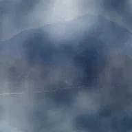

湍流

用平滑分形噪点填充图层的不透明部分，生成云、烟或亮度图。
设置
| 设置项 | 类型 | 范围 | 默认值 |
|---|---|---|---|
| 视差 | 点（X, Y） | -5000 px 至 5000 px | 0 px, 0 px |
| 偏移 | 点（X, Y） | -5000 px 至 5000 px | 0 px, 0 px |
| 演化 | 数字 | -50 至 50 | 0 |
| 缩放 | 数字 | 0.01 至 50 | 1 |
| 拉伸 | 点（X, Y） | 0.01 至 10 | 1, 1 |
| 强度 | 数字 | 0.1 至 1.5 | 1 |
| 种子 | 数字 | 0 至 5 | 0 |
| 颜色1 | 颜色 | – | #000000 |
| 颜色2 | 颜色 | – | #FFFFFF |
| 透明度 | 数字 | 0% 至 100% | 100% |
| 混合模式 | 选项 | 正常，正片叠底，滤色，叠加，柔光，强光，相加，变暗，变亮，差值，颜色减淡，颜色加深 | 正常 |
| 偏移量 | 数字 | -1 至 1 | 0 |
| 倍频 | 数字 | 1 至 9 | 6 |